How I made Shoreline
A driving game you play in your browser, set on a small tropical island.
It's night when you arrive. A circle of sand lights up around a little coral beach buggy, with the word Start written in the sand in front of it. Press a key and the rest of the island grows outward from the car. About a minute later, the sun comes up.
Shoreline is a game I designed and built for my portfolio. There's a race circuit with a lap timer and a bowling lane with giant tiki pins. Shells are hidden along the beaches, along with four secrets that nobody tells you about. The feel comes from Bruno Simon's portfolio, a driving game that set the bar for this kind of site. The island, the car and the art are my own.
It starts as a plan, not a picture
One file describes the whole island: the coastline, the race circuit, nine pools and the zones between them. A small script draws that file as a sketch, so I can review the layout before anything gets built. When I want to move a pool or reshape a bend, I change the plan and the island rebuilds itself from it.
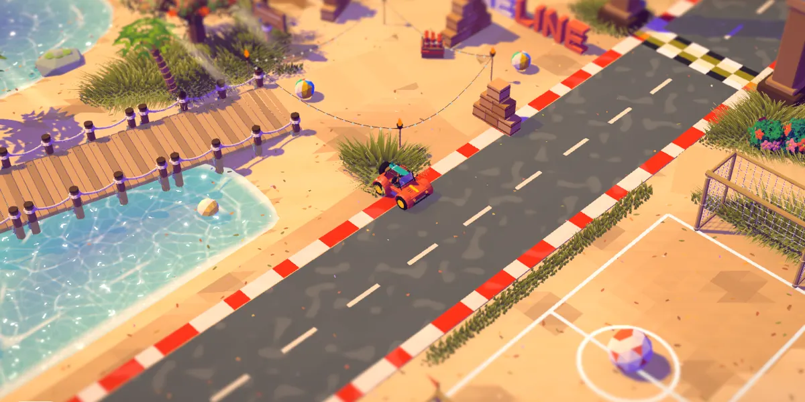
Every model is my own art
I sketch each piece as a concept image first, then build it in Blender. The car went through four versions. The first had a soft top, and from the game's camera it read as a cream box, because the roof hid the coral body and the seats. I went back to an open frame, and the third open version is the one you drive. Its paint and stickers are rewards: each secret you find unlocks a new color.
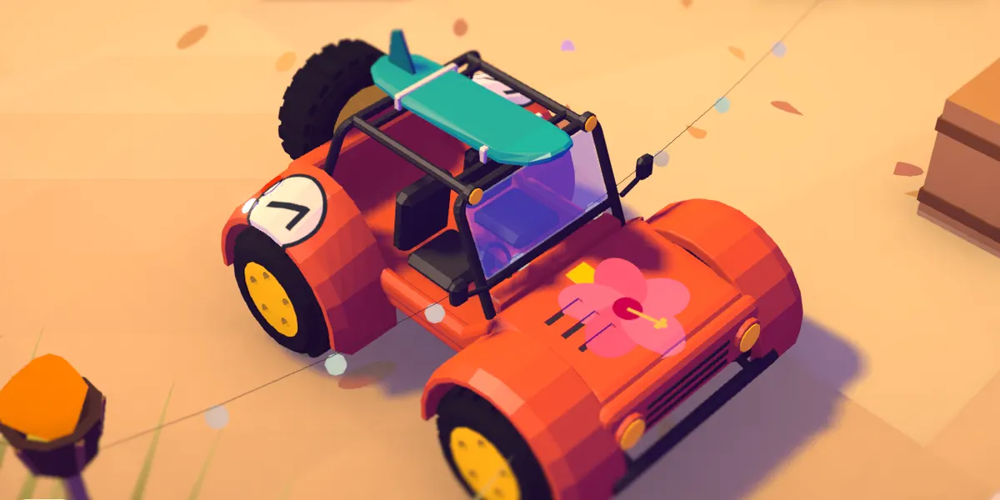
Light that never turns gray
One shading rule covers everything on the island. Lit sides take the warm color of the sun, and shadows turn a deep purple instead of gray. A full day lasts six minutes, and clouds drift across the ground as it goes by. At night, string lights come on between the tiki torches and the buggy's headlights light up the sand ahead.
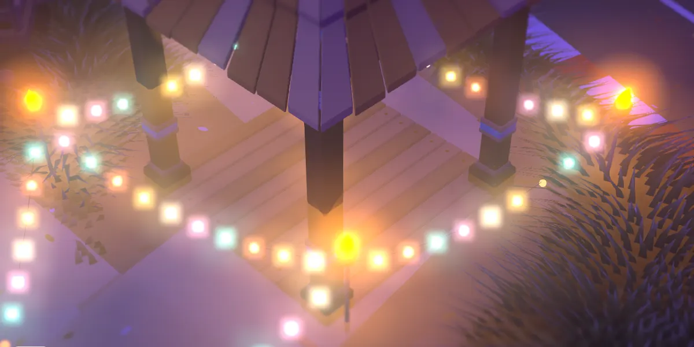
Water you want to drive into
The sea darkens as it gets deeper, with foam along the shore and small waves that run up the sand and slide back. In the shallows, bright lines of light move across the bottom the way sunlight does under real water, and small sparkles flash where a ripple catches the sun. At night the foam glows blue, and driving through a pool leaves rings of light behind you.
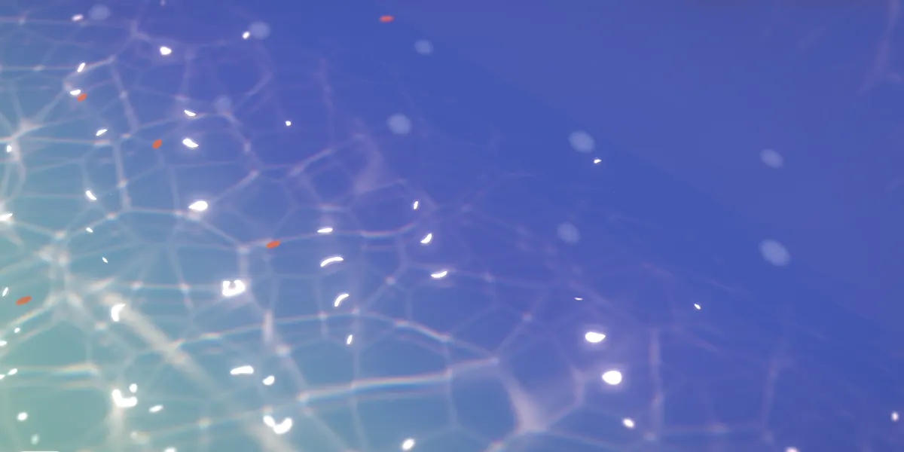
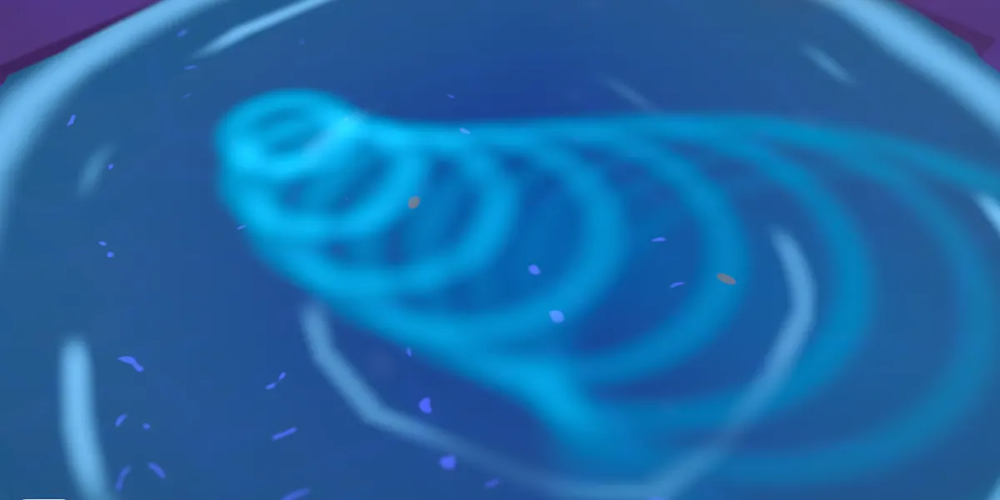
The island reacts to you
Grass bends under the tires and grows back over about a minute. Bump a tree and it shakes and drops leaves. Drive on sand and the buggy gets dirty from the wheels up. Drive through a pool and it comes out clean and dripping. After a rain shower, puddles form on the road and slowly dry up again.
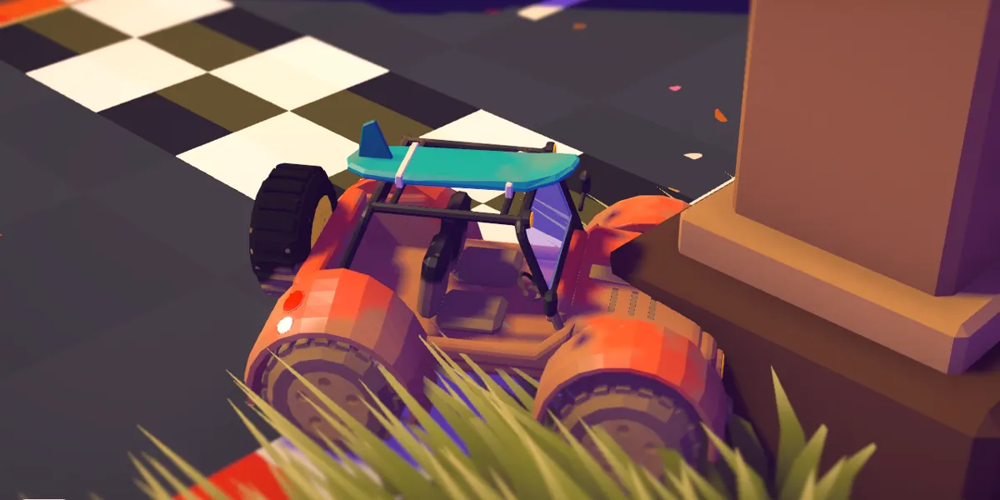
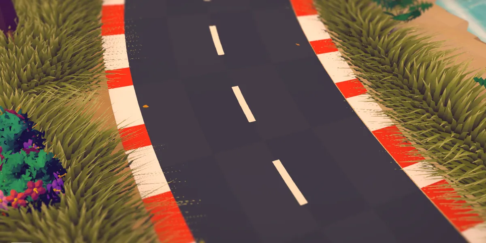
Animals that notice the car
Six animals live on the island. I modeled each one in Blender with moving parts, like claws, wings and flippers. Crabs scuttle sideways out of your way, and wild roosters scatter with a squawk. Honu rest on the sand and paddle slowly through the shallows. Dolphins leap offshore near wherever you're driving, and at night fireflies blink around the trees.
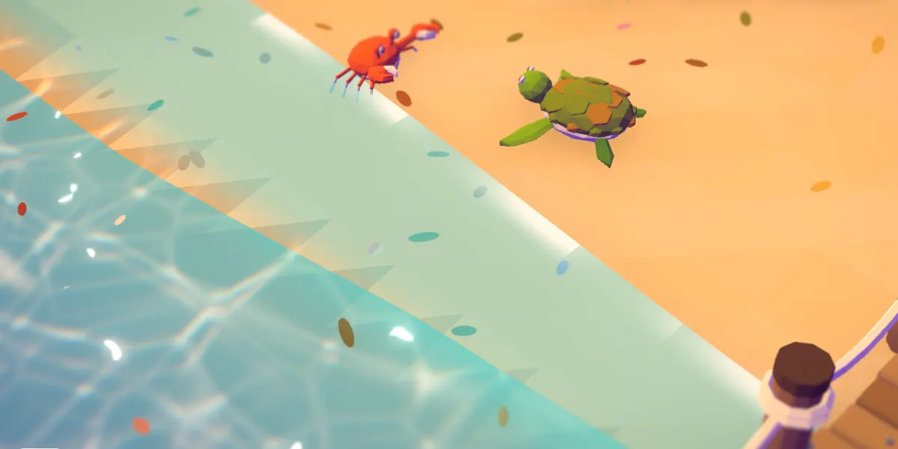
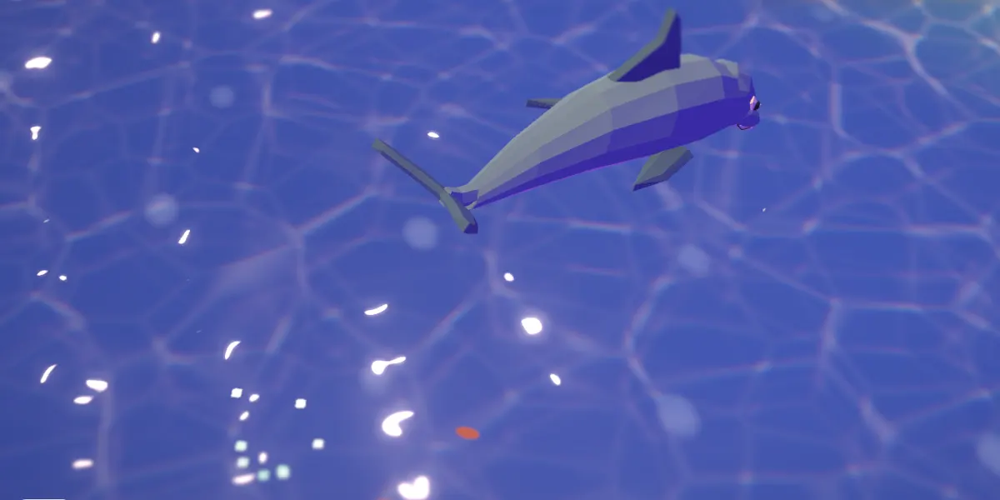
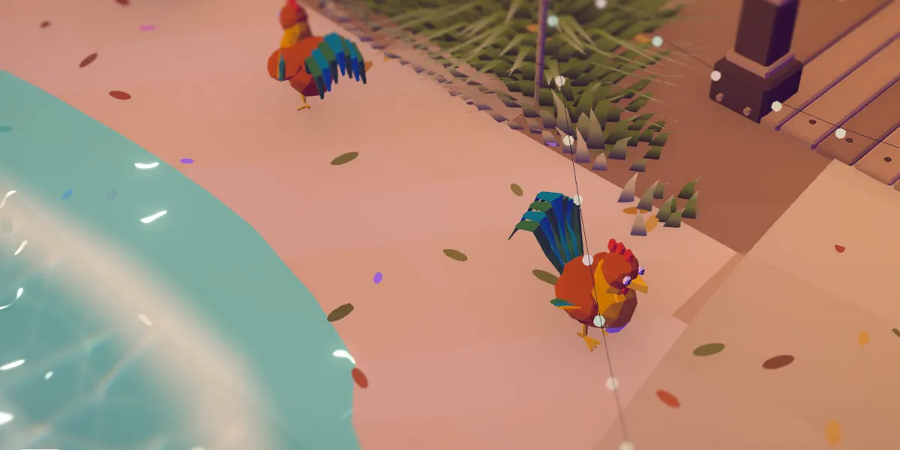
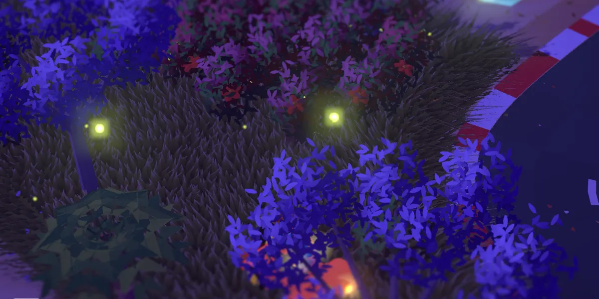
Fast enough to play on a phone
The first version took about 21 seconds to load. Smaller models, downloaded all at once, and a fix to one slow step at startup brought that down to about 2.5 seconds. Grass is only drawn in a patch that follows the car, which puts more than 100,000 blades on screen without the cost of covering the whole island. The fireflies, skid marks and drifting leaves are each drawn as a single batch.
Tested by driving into things on purpose
I test every change with scripted drives in a browser that take screenshots as they go, so I can check a change without playing through it by hand. When the trees kept getting in the way, I added a gentle steering assist that bends the car's path around a trunk. To check it, the script drove at trees from 186 different angles. Hard crashes dropped from 115 to 14.
It's free and runs in your browser, on a computer or a phone.
Play Shoreline